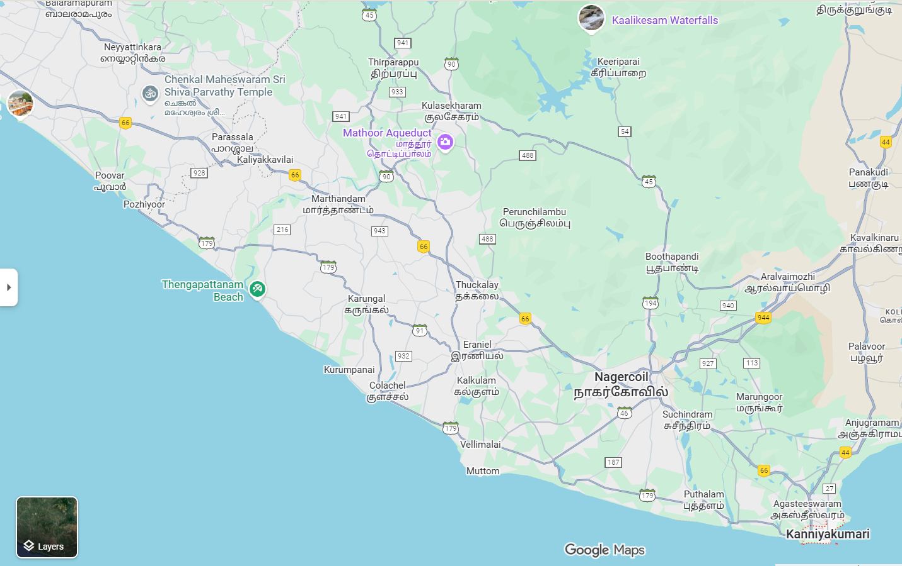

map.html
<html>
<head>
    <title>My City</title>
</head>

<body>
    <center>
        
        <map name="image-map">
            <area target="" alt="Colachel" title="Colachel" href="harbour.html" coords="692,693,538,575" shape="rect">
            <area target="" alt="Vellimalai" title="Vellimalai" href="hills.html" coords="722,674,805,731" shape="rect">
            <area target="" alt="Kanniyakumari" title="Kanniyakumari" href="glassbridge.html" coords="1236,808,1379,876" shape="rect">
            <area target="" alt="Thirparappu" title="Thirparappu" href="waterfalls.html" coords="565,73,692,150" shape="rect">
        </map>
    </center>
</body>
</html>